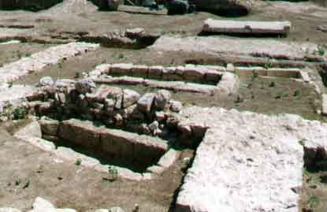
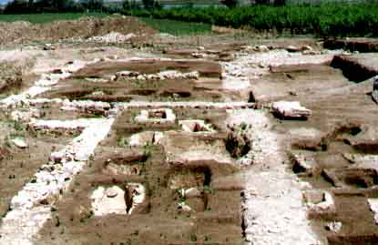

Les sépultures.
Les sépultures.
|
  |
Plus de 200 tombes ont été fouillées et mises à jour. Ce sont essentiellement des coffres en dalles ou en lauzes, des coffres maçonnés, des bâtières en tuiles ou des coffres mixtes, dans lesquels on observe des remplois antiques. Les inhumés sont des hommes et des femmes adultes et des enfants. |
| (Photos A.Guerrero) |